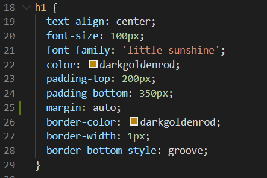

Technical blog question
What is the difference between Margin, Border, and Padding?
In CSS there are several ways to affect the layout of an item on a page, one of them is by setting margin, border and padding. If you look at the diagram bellow, you can see the content in the middle, that can be text or an image. Next the padding is the space around the content, it can be set in width by pixels (i will give an example soon). After that is the border, then the margin is the invisible bubble around the border that can act as a spacer around the object.

You can see in the screen shot below, the tag of h1 has had CSS properties applied to it. The border has been given a width of "1px" with 'border-width' The border colour is darkgoldenrod. The margin has been set to auto which will automatically centre the item within it's container. The padding at the top is 200 pixels, and the bottom is 350pixels.
